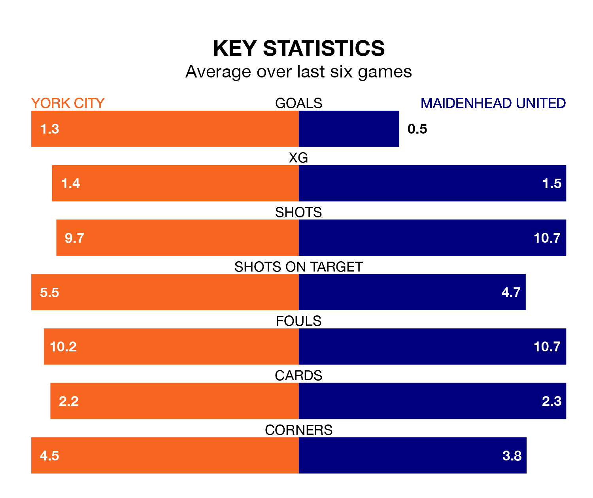

York City host Maidenhead United on Saturday at the LNER Community Stadium in National League.
In their last league match, on January 27, York lost to Hartlepool United 2-1 away, with their goal scored by Dipo Akinyemi.
Maidenhead won, 2-1 at home against Solihull Moors, with Samuel James Barratt and Tobi Sho-Silva on the scoresheet.
York are 19th in the table after 29 games, of which they have won seven and drawn 12, earning 33 points.
Maidenhead are four places ahead of City in 15th, with eight wins and 11 draws putting them on 35 points.
With 30 goals in 29 games so far this season, United are the league's third-lowest scorers with 1.0 goals per game. But they are conceding fewer than average too, letting in 37 goals at a rate of 1.3 per game.
The home team are also below average scorers, with 1.3 goals per game, compared to a league average of 1.5. They have conceded 1.6 goals per game.
In the last three years, York and Maidenhead have played each other on three occasions. They won one each, and they drew once.
Their last meeting was on November 25, when they played out a 1-1 draw.
York are in mixed form in National League, with two wins and three draws from their last six games.
With two wins and two draws over that period, the visitors' form is slightly worse – they have taken eight points from 18, compared to York's nine.
Updated: 14:12 (UTC), 02/02/24